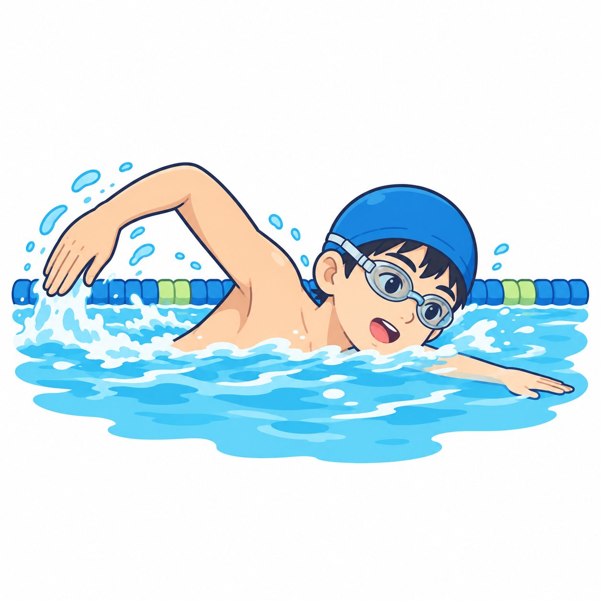

be동사
- 주어에 맞는 be동사 am, are, is를 고를 수 있다.
- be동사의 뜻(~이다, ~하다, ~에 있다)과 과거형 was, were를 안다.
- be동사의 부정문과 의문문을 만들고, 질문에 대답할 수 있다.
I am good at math. 나는 수학을 잘한다. 〈I + am〉
These cookies are really sweet. 이 쿠키들은 정말 달다. 〈복수 주어 + are〉
The test is very easy. 그 시험은 매우 쉽다. 〈(어떠)하다〉
My bag is under the desk. 내 가방은 책상 아래에 있다. 〈(어디에) 있다〉
I was sick last week. 나는 지난주에 아팠다. 〈am → was〉
We were at the beach last Sunday. 우리는 지난 일요일에 해변에 있었다. 〈are → were〉
- Unit 1be동사의 긍정문 p.10
- Unit 2be동사의 부정문과 의문문 p.16
My room is not[isn't] very big. 내 방은 그다지 크지 않다.
We were not[weren't] late for the bus. 우리는 버스 시간에 늦지 않았다.
A: Is your dad at home? B: Yes, he is. A: 너희 아빠는 집에 계시니? B: 응, 계셔.
 예문 듣기
예문 듣기
be동사의 긍정문
예문 듣기
am, are, is(과거형 was, were)를 모두 묶어 be동사라고 불러요. 원래 모양이 be라서 붙은 이름이에요. be동사는 ‘~이다, ~하다, (~에) 있다’라는 뜻이고, 주어(문장의 주인공 ☞ p.6)에 따라 모양이 바뀌어요.
변하는 be동사
You are
He is
주어가 인칭대명사(I, you, he 등 ☞ p.6)일 때 짝이 되는 be동사는 정해져 있어요. 표를 소리 내어 외워요. I는 am, you는 한 명이어도 are예요. (I is ×, You is ×)
| 인칭 | 수 | 주어 | be동사 | 줄임말 |
|---|---|---|---|---|
| 1인칭 (말하는 나/우리) | 단수 | I | am | I'm |
| 복수 | We | are | We're | |
| 2인칭 (듣는 너/너희) | 단수·복수 | You | You're | |
| 3인칭 (그 밖의 모두) | 단수 | He / She / It | is | He's / She's / It's |
| 복수 | They | are | They're |
I am good at math. 001나는 수학을 잘한다.
You are my best friend. 002너는 나의 가장 친한 친구이다.
He is in the music room. 003그는 음악실에 있다.
She's my homeroom teacher. 004그녀는 우리 담임 선생님이다.
It's my new bike. 005그것은 나의 새 자전거이다.
We're happy today. 006우리는 오늘 행복하다.
They're my classmates. 007그들은 나의 반 친구들이다.
I am → I'm (a를 뺌) · she is → she's (i를 뺌) · they are → they're (a를 뺌)
단어good at ~을 잘하는homeroom teacher 담임 선생님happy 행복한classmate 반 친구thirteen 13(살)nurse 간호사funny 재미있는
하나면 is,
둘 이상이면 are
→ is
둘 이상 → are
꾸미는 말을 가려 보세요
주어 뒤에 in, with 같은 전치사(☞ p.6)로 시작하는 덩어리가 붙으면, 그 덩어리를 손으로 가리고 남은 명사를 봐요.The pencils in my bag are new.
→ 중심은 pencils(여럿) → are
The girl with two cats is my cousin.
→ 중심은 girl(한 명) → is
주어가 명사일 때는 he, she, it, we, they 중 무엇으로 바꿀 수 있는지 생각해 보세요(☞ p.7). 하나를 가리키는 he, she, it이면 is, 둘 이상인 we, they면 are예요.
My sister is a high school student. 008= She우리 언니는 고등학생이다.
These cookies are really sweet. 009= They이 쿠키들은 정말 달다.
The milk is in the fridge. 010= It우유는 냉장고 안에 있다.
Jisu and her brother are at the bus stop. 011= They지수와 남동생은 버스 정류장에 있다.
| 주어 | be동사 | 예 |
|---|---|---|
| 하나 (단수) | is | a book, my dog, Tom, the bus, my class |
| 둘 이상 (복수) 보통 끝에 -s/-es | are | books, boxes, my parents, Tom and Mina |
| 모양이 바뀌는 복수 | are | children(아이들), people(사람들), men, women, feet, teeth |
| 셀 수 없는 명사 늘 단수로 봐요 | is | water, milk, juice, bread, cheese, rice, spaghetti, weather |
단어sweet 단, 달콤한fridge 냉장고bus stop 버스 정류장parents 부모님children 아이들(child의 복수)full 가득 찬
~이다, ~하다,
(~에) 있다
뒤에 오는 말이
정해요
be동사 뒤에 무엇이 오는지 보세요. 사람·사물의 이름(명사)이 오면 ‘~이다’, 상태를 나타내는 말(형용사 ☞ p.6)이 오면 ‘~하다’, 장소가 오면 ‘~에 있다’로 해석해요.
| 뒤에 오는 말 | 뜻 | 예 |
|---|---|---|
| 명사 (사람·사물의 이름) | (무엇)이다 | is a teacher, are my friends |
| 형용사 (상태·성질) | (어떠)하다 | is happy, are tall, is easy |
| 장소 (in, on, at + 장소) | (~에) 있다 | is in the box, are at school |
Mr. Kim is our English teacher. 012명사김 선생님은 우리 영어 선생님이시다.
The test is very easy. 013형용사그 시험은 매우 쉽다.
My bag is under the desk. 014장소내 가방은 책상 아래에 있다.
단어under ~ 아래에sunny 화창한hungry 배고픈cousin 사촌voice 목소리gym 체육관
was, were
are → were
지나간 일을 말할 때는 be동사의 과거형을 써요. 해석은 ‘~이었다, ~했다, (~에) 있었다’가 돼요. 현재형에서 짝을 찾은 다음 과거형으로 바꾸면 쉬워요.
I was sick last week. 015나는 지난주에 아팠다.
The movie was really scary. 016그 영화는 정말 무서웠다.
You were in the library yesterday. 017너는 어제 도서관에 있었다.
We were at the beach last Sunday. 018우리는 지난 일요일에 해변에 있었다.
Minho and Yuna were in the same class last year. 019민호와 유나는 작년에 같은 반이었다.
| 주어 | 현재형 | 과거형 |
|---|---|---|
| I | am | was |
| he, she, it, 단수 명사 | is | was |
| you, we, they, 복수 명사 | are | were |
yesterday 어제 · last ~ 지난 ~ (last week, last year) · ~ ago ~ 전에 (two days ago) · then 그때
단어sick 아픈scary 무서운beach 해변same 같은cook 요리사cheap 값이 싼tired 피곤한clear 맑은
Unit Exercise
정답 및 해설 p.4밑줄 친 부분은 모두 틀렸어요. 바르게 고쳐 쓰세요. POINT 1-2
빈칸에 알맞은 be동사를 쓰세요. 시간을 나타내는 말을 보고 현재형과 과거형을 정하세요. POINT 1-2-4
단어sleepy 졸린drama club 연극 동아리fresh 신선한people 사람들heavy 무거운Ms. ~ 씨, ~ 선생님(여자)delicious 맛있는windy 바람이 부는grandpa 할아버지farmer 농부
괄호 안에서 알맞은 것에 ○표 하고, 우리말 해석을 완성하세요. (○표와 해석이 모두 맞아야 1개) POINT 2-3-4
밑줄 친 be동사의 뜻을 골라 기호를 쓰세요. POINT 3
ⓐ (무엇)이다 ⓑ (어떠)하다 ⓒ (~에) 있다
20개 이하 틀린 문제의 POINT를 다시 읽고, 워크북 Unit 1(워크북 p.2~5)을 풀어요.
단어third 세 번째의floor 층pretty 예쁜firefighter 소방관concert 콘서트hot 뜨거운chair 의자puppy 강아지cute 귀여운
be동사의 부정문과 의문문
예문 듣기‘~이 아니다, ~하지 않다, (~에) 없다’라고 말하는 문장을 부정문, ‘~이니?’라고 묻는 문장을 의문문이라고 해요. 이번 Unit에서는 be동사로 두 가지 문장을 만들어요.
be동사+not
be동사
바로 뒤!
be동사 바로 뒤에 not(아니다)을 넣으면 부정문이 돼요. 줄일 때는 not의 o를 빼고 그 자리에 아포스트로피(’)를 찍어요: is not → isn't.
I am not tired at all. 020나는 전혀 피곤하지 않다.
My room is not[isn't] very big. 021내 방은 그다지 크지 않다.
They are not[aren't] in the gym. 022그들은 체육관에 없다.
The store was not[wasn't] open on Sunday. 023그 가게는 일요일에 열지 않았다.
We were not[weren't] late for the bus. 024우리는 버스 시간에 늦지 않았다.
| 원래 모양 | be동사+not 줄이기 | 주어+be동사 줄이기 |
|---|---|---|
| I am not | (없음) | I'm not |
| he is not | he isn't | he's not |
| you are not | you aren't | you're not |
| it was not / they were not | it wasn't / they weren't | (없음) |
단어not at all 전혀 ~ 않다store 가게open 문을 연be late for ~에 늦다ready 준비된singer 가수wet 젖은
be동사+주어 ~?
앞으로 쏙
‘~이니?’라고 물을 때는 be동사를 문장 맨 앞으로 옮겨요. 아래 3단계를 그대로 따라 해 보세요.
- be동사(am, are, is, was, were)를 문장 맨 앞으로 옮겨요.
- 문장의 첫 글자는 대문자로 쓰고, 원래 맨 앞에 있던 단어의 첫 글자는 소문자로 바꿔요. (단, I와 사람 이름은 그대로 대문자)
- 마침표(.)를 물음표(?)로 바꿔요.
대답은 Yes나 No 뒤에 ‘대명사 주어 + be동사(+not)’로 짧게 해요. 질문과 같은 be동사로 대답해요.
A: Are you a new student? 025너는 새로 온 학생이니?
B: Yes, I am. / No, I'm not.응, 그래. / 아니, 그렇지 않아.
A: Is your dad at home? 026너희 아빠는 집에 계시니?
B: Yes, he is. / No, he isn't.응, 계셔. / 아니, 안 계셔.
A: Was the test easy? 027그 시험은 쉬웠니?
B: Yes, it was. / No, it wasn't.응, 쉬웠어. / 아니, 쉽지 않았어.
A: Were they at the festival? 028그들은 축제에 있었니?
B: Yes, they were. / No, they weren't.응, 있었어. / 아니, 없었어.
| 의문문 | 긍정의 대답 | 부정의 대답 |
|---|---|---|
| Am I ~? | Yes, you are. | No, you aren't. |
| Are you ~? (너) | Yes, I am. | No, I'm not. |
| Are you ~? (너희) | Yes, we are. | No, we aren't. |
| Is he[she, it] ~? | Yes, he is. | No, he isn't. |
| Were you ~? (너) | Yes, I was. | No, I wasn't. |
| Was it ~? / Were they ~? | Yes, it was. / they were. | No, it wasn't. / they weren't. |
단어aunt 이모, 고모new 새로운festival 축제
대명사로!
대명사로!
대답할 때는 질문의 주어를 그대로 쓰지 않고 알맞은 대명사로 바꿔요. 누구(무엇)인지, 몇 명(개)인지 생각해서 골라요.
| 질문의 주어 | 대답 |
|---|---|
| 남자 한 명 — Tom, my dad, your brother, Mr. Kim | he |
| 여자 한 명 — Mina, my mom, your sister, Ms. Park | she |
| 사물·동물 하나 — the cat, the museum, this, that | it |
| 둘 이상 — the boys, your friends, these, those | they |
| you (한 명, 너) | I |
| you (여럿, 너희), you and ~ | we |
단어museum 박물관ready 준비된be from ~ 출신이다Canada 캐나다
Unit Exercise
정답 및 해설 p.7괄호 안의 지시대로 바꿔 쓰세요. (첫 글자는 대문자, 끝은 마침표나 물음표) POINT 5-6
대명사 주어 + be동사로 짧게 대답하세요. POINT 6
단어coach 코치be good at ~을 잘하다swimming 수영party 파티busy 바쁜crowded 붐비는twins 쌍둥이notebook 공책
밑줄 친 부분은 모두 틀렸어요. 바르게 고쳐 쓰세요. POINT 5-6
괄호 안의 말을 이용하여 대답에 알맞은 질문을 쓰세요. POINT 6
우리말과 같은 뜻이 되도록 괄호 안의 말을 이용하여 쓰세요. POINT 5-6
19개 이하 틀린 문제의 POINT를 다시 읽고, 워크북 Unit 2(워크북 p.6~8)를 풀어요.
단어doctor 의사angry 화난thirsty 목마른scary 무서운
한눈에 정리
빈칸을 채운 뒤 아래의 정답으로 확인해요POINT 1주어에 따라 변하는 be동사
| I | → | I am | → |
| you, we, they | → | they are | → |
| he, she, it | → | she is | → |
POINT 2명사 주어
하나(단수)면 , 둘 이상(복수)이면
‘A and B’는 → are
children은 , water, milk는 취급
POINT 3be동사의 뜻
be + 명사 → (무엇)
be + 형용사 → (어떠)
be + 장소 → (~에)
POINT 4과거형
am, is → are →
you는 한 명이어도 →
과거를 나타내는 말: yesterday, last ~, ~
POINT 5부정문
be동사 에 not
is not → were not →
I am not → (amn't ×)
POINT 6의문문과 대답
be동사를 주어 으로, 끝에
Are you ~? (너) → Yes, .
Is your dad ~? → No, .
헷갈리는 것 다시 보기 — 맞는 것에 ○표
1 Tom and I [am / are] friends. 2 Your mom [is / are] kind. 3 The children [is / are] here.
4 You [was / were] late. 5 I [amn't / 'm not] sad. 6 A: Is she your sister? B: Yes, [she is / she's].
| POINT | 할 수 있나요? | 자신 있음 | 보통 | 다시 | 쪽 |
|---|---|---|---|---|---|
| 1 | 인칭대명사 주어에 맞는 am, are, is와 줄임말을 쓸 수 있다. | 10 | |||
| 2 | 명사 주어가 단수인지 복수인지 판단해 is, are를 고를 수 있다. | 11 | |||
| 3 | be동사 뒤의 말을 보고 ‘이다, 하다, 있다’로 해석할 수 있다. | 12 | |||
| 4 | 과거를 나타내는 말을 보고 was, were를 쓸 수 있다. | 13 | |||
| 5 | be동사 뒤에 not을 넣어 부정문을 만들 수 있다. | 16 | |||
| 6 | 의문문을 만들고 대명사로 알맞게 대답할 수 있다. | 17~18 |
Chapter Test
✳정답 및 해설 p.9/ 100
80점 이상 통과
[1-2]다음 빈칸에 들어갈 말로 알맞은 것을 고르세요. [각 5점]
다음 중 빈칸에 들어갈 말이 나머지와 다른 것은? [5점]
다음 중 줄임말이 바르지 않은 것은? [5점]
다음 중 어법상 알맞지 않은 문장은? [5점]
다음 질문에 대한 대답으로 알맞은 것은? [5점]
B:
다음 대화의 빈칸 (A), (B)에 들어갈 말이 바르게 짝지어진 것은? [5점]
B: No, she isn't. She (B) in the garden.
다음 중 어법상 알맞은 것을 모두 고르세요. [5점, 모두 맞혀야 점수]
다음 중 대화가 어색한 것은? [5점]
다음 문장에서 어법상 틀린 부분을 찾아 바르게 고쳐 쓰세요. [8점]
(1) Mr. Brown and his wife is from London.
(2) The weather were nice last weekend.
서술형[11-12]우리말과 일치하도록 주어진 단어를 바르게 배열하세요. (첫 글자는 대문자로) [각 6점]
(open / the museum / not / was)
(your friends / are / the playground / at)
다음 문장을 괄호 안의 지시대로 바꿔 쓰세요. [8점]
(1) The soup is hot. (과거형으로)
(2) You were at home last night. (의문문으로)
다음 그림을 보고, 어제 각 사람이 있었던 장소를 〈보기〉와 같이 쓰세요. [9점]

(1)
(2)
다음 표를 보고 대화를 완성하세요. [9점]
| last week | now | |
|---|---|---|
| Kate | sick | fine |
| Ben and Leo | in Busan | in Seoul |
(1) A: Is Kate sick now?
B: No, . She sick
last week.
(2) A: Were Ben and Leo in Seoul last week?
B: No, . They in Busan.
다음 〈조건〉에 맞게 우리말을 영작하세요. [9점]
- be동사의 과거형을 사용할 것
- 줄임말을 사용할 것
- late for를 사용할 것
틀린 문제 다시 보기
Review & Wrong-Answer Note80점 미만 ① 틀린 문제를 해설 보기 전에 다시 풀기 → ② 아래 표에서 POINT를 찾아 다시 읽기 → ③ 해설 읽기 → ④ 워크북 Chapter Test(워크북 p.10~11)를 풀고 다시 80점 확인하기
| 문항 | 배점 | POINT | 본책 쪽 | 틀림 | 복습 끝 | 문항 | 배점 | POINT | 본책 쪽 | 틀림 | 복습 끝 |
|---|---|---|---|---|---|---|---|---|---|---|---|
| 1 | 5 | 2 | 11 | 9 | 5 | 6 | 17~18 | ||||
| 2 | 5 | 4 | 13 | 10 | 8 | 2, 4 | 11, 13 | ||||
| 3 | 5 | 2 | 11 | 11 | 6 | 5 | 16 | ||||
| 4 | 5 | 1, 5 | 10, 16 | 12 | 6 | 6 | 17 | ||||
| 5 | 5 | 2 | 11 | 13 | 8 | 4, 6 | 13, 17 | ||||
| 6 | 5 | 6 | 17 | 14 | 9 | 3, 4 | 12, 13 | ||||
| 7 | 5 | 2, 6 | 11, 17 | 15 | 9 | 4, 6 | 13, 18 | ||||
| 8 | 5 | 2, 5, 6 | 11, 16, 17 | 16 | 9 | 4, 5 | 13, 16 |
Chapter 01 단어 정리
Words외운 단어는 □에 표시해요. 뜻을 가리고 말해 보면 더 잘 외워져요. 오른쪽 숫자는 처음 나온 쪽이에요.
| be good at | ~을 잘하다 | 10 | |
| homeroom teacher | 담임 선생님 | 10 | |
| classmate | 반 친구 | 10 | |
| thirteen | 13(살) | 10 | |
| nurse | 간호사 | 10 | |
| funny | 재미있는 | 10 | |
| sweet | 단, 달콤한 | 11 | |
| fridge | 냉장고 | 11 | |
| bus stop | 버스 정류장 | 11 | |
| parents | 부모님 | 11 | |
| child – children | 아이 – 아이들 | 11 | |
| full | 가득 찬 | 11 | |
| under | ~ 아래에 | 12 | |
| sunny | 화창한 | 12 | |
| hungry | 배고픈 | 12 | |
| cousin | 사촌 | 12 | |
| voice | 목소리 | 12 | |
| gym | 체육관 | 12 | |
| sick | 아픈 | 13 | |
| scary | 무서운 | 13 | |
| beach | 해변 | 13 | |
| same | 같은 | 13 | |
| cook | 요리사 | 13 | |
| cheap | 값이 싼 | 13 | |
| tired | 피곤한 | 13 | |
| clear | 맑은 | 13 |
| ago | ~ 전에 | 13 | |
| sleepy | 졸린 | 14 | |
| drama club | 연극 동아리 | 14 | |
| fresh | 신선한 | 14 | |
| people | 사람들 | 14 | |
| heavy | 무거운 | 14 | |
| Ms. | ~ 씨(여자) | 14 | |
| delicious | 맛있는 | 14 | |
| windy | 바람이 부는 | 14 | |
| farmer | 농부 | 14 | |
| third | 세 번째의 | 15 | |
| floor | 층 | 15 | |
| firefighter | 소방관 | 15 | |
| puppy | 강아지 | 15 | |
| cute | 귀여운 | 15 | |
| not ~ at all | 전혀 ~ 않다 | 16 | |
| store | 가게 | 16 | |
| open | 문을 연 | 16 | |
| be late for | ~에 늦다 | 16 | |
| ready | 준비된 | 16 | |
| singer | 가수 | 16 | |
| wet | 젖은 | 16 | |
| aunt | 이모, 고모 | 17 | |
| festival | 축제 | 17 | |
| museum | 박물관 | 18 | |
| be from | ~ 출신이다 | 18 |
| Canada | 캐나다 | 18 | |
| coach | 코치 | 19 | |
| swimming | 수영 | 19 | |
| busy | 바쁜 | 19 | |
| crowded | 붐비는 | 19 | |
| twins | 쌍둥이 | 19 | |
| angry | 화난 | 20 | |
| thirsty | 목마른 | 20 | |
| island | 섬 | 22 | |
| hospital | 병원 | 22 | |
| dirty | 더러운 | 22 | |
| hero | 영웅 | 22 | |
| team | 팀 | 22 | |
| pilot | 비행기 조종사 | 22 | |
| kitchen | 부엌 | 22 | |
| garden | 정원 | 22 | |
| art club | 미술 동아리 | 22 | |
| famous | 유명한 | 22 | |
| at work | 일하는 중인 | 22 | |
| umbrella | 우산 | 23 | |
| fun | 재미있는 | 23 | |
| wife | 아내 | 23 | |
| playground | 운동장 | 23 | |
| swimming pool | 수영장 | 23 | |
| bakery | 빵집 | 23 | |
| soup | 수프 | 23 |